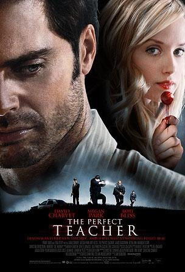

#9226 Verführt
 
 IMDB-Wertung: 5.3 / 10
IMDB-Wertung: 5.3 / 10  Metascore: 0
Metascore: 0 
Beautiful and spoiled high-school student Devon Cory always gets what she wants. This time, she wants her handsome math teacher, Jim Wilkes, and when Devon sets her sights on the recent divorcee, she makes every effort to insinuate herself into all aspects of his life, including coming in between him and his girlfriend, Rachel. As Devon's obsession with Jim grows, it becomes clear she won't take no for an answer and will stop at nothing to secure his affections. Unfortunately for Jim, it might be too late before he realizes that Devon is hardly the perfect student he thought she was.
Jahr: 2010
Dauer: 93 Minuten
FSK: 12
Land: Kanada Studio: Sunfilm EntertainmentTonspuren:
Untertitel:
Auflösung: 720p (1280x720) Größe: 2058 MB
Genre: Thriller, Drama, Krimi
Regisseur: Jim Donovan
Drehbuch: Christine Conradt
Soundtrack:
Darsteller:
 Megan Park als Devon
Megan Park als Devon- David Charvet als Jim Wilkes
- Boti Bliss als Rachel
- Amanda Tilson als Kinsey Ray
- Kimberly-Sue Murray als Monica
 James McGowan als Reid
James McGowan als Reid- Judith Baribeau als Marissa
- Sophie Gendron als Carrie
- Andrew Johnston als Donald Ellison
- Carinne Leduc als Morgan
- Caroline Redekopp als Reporter
- Kate Drummond als Gretchen Keller
- Sarah McVie als Officer Leighton
- Nick Baillie als Dr. Erickson
 Robert Reynolds als Mr. Holt
Robert Reynolds als Mr. Holt- Reba Wilson als Student
- Alex Cardillo als Student (uncredited)
- Tim Finnigan als Grocery Shopper #4 (uncredited)
- Daniel Simpson als Police Officer (uncredited)
- Keeva Lynk als Annique Wilkes
- Christina Broccolini als Apple
- Carolyn Fe als Rosa
- Tori Hammond als Sue
- Craig Thomas als Officer Stewart
- Cinthia Burke als Jessica
- Kim Guite als Manicurist
- Marcela Kafie als Student
- Billy D. Kennedy als Police Officer
- Steven Stapledon als Restaurant Patron
- Zhaida Uddin als Restaurant Patron
- Crystal Bradley als Volleyball Player (uncredited)
- Miles Carney als Student (uncredited)
- Matthew Champ als Funeral Mourner (uncredited)
- Paul Finnigan als Restaurant Patron (uncredited)
- Claude Huard als Patron (uncredited)
- James Laurin als Jogger (uncredited)
- Jonathan Leavitt-Berthiaume als Student (uncredited)
- Pavel Lubanski als Funeral Mourner (uncredited)
- Jolanta Mojsej als Restaurant Patron (uncredited)
- Kathleen Perron als Volley Ball Player (uncredited)
- Simon Seline als Waiter (uncredited)
Datei: X:\2010(N-Z)\Verführt (2010, FSK12, 1280x720).mkv seit 20.07.2018
Festplatte: HD 2010(G-Z)-2011(A-F)
 Es gibt insgesamt 115 Filme in der Gruppe '2010(N-Z)'
Es gibt insgesamt 115 Filme in der Gruppe '2010(N-Z)'